Pleiads / Phoenix — video regression
Reference renderer against MAME, one row per frozen state. Generated 2026-09-18 14:47:41.
ALL 14 STATES PIXEL-IDENTICAL
pleiads · frame 0120 0 px differ
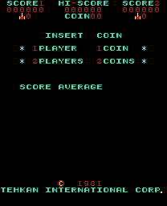


pleiads · frame 0300 0 px differ
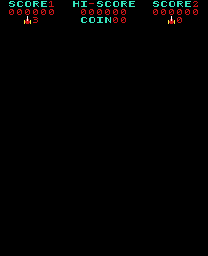


pleiads · frame 0600 0 px differ
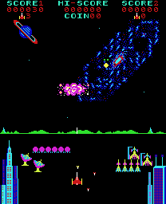


pleiads · frame 0900 0 px differ
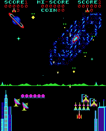


pleiads · frame 1400 0 px differ
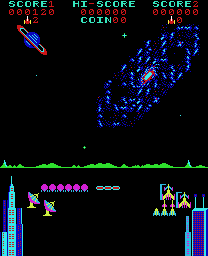


pleiads · frame 1900 0 px differ
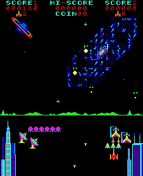


pleiads · frame 2400 0 px differ
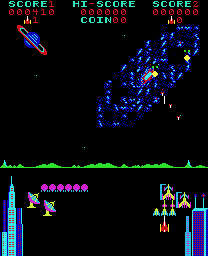


pleiads · frame 3000 0 px differ
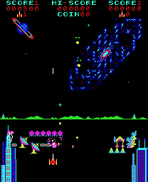


pleiads · frame 3600 0 px differ
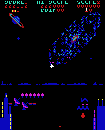


pleiads · frame 4200 0 px differ
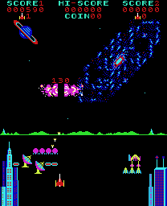


phoenix · frame 0300 0 px differ
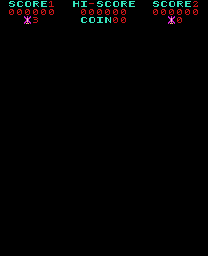


phoenix · frame 0900 0 px differ
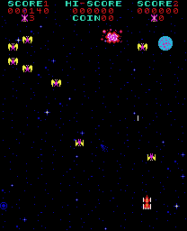


phoenix · frame 1800 0 px differ
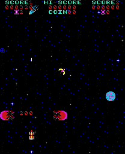


phoenix · frame 2600 0 px differ
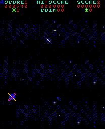


pleiads · audio correlation +1.0000
full measurement
/Users/scottmoschella/work/pleiads/build/mame_pleiads.wav vs /Users/scottmoschella/work/pleiads/build/rtl_pleiads.wav: 959999 samples at 48000 Hz (20.0 s)
A B B/A
peak 32767 32767 1.000
rms 7925.0 7910.5 0.998
RMS over 4 s windows:
window A B B/A
0s 6553.0 6554.0 1.000
4s 6414.5 6403.4 0.998
8s 9434.4 9415.4 0.998
12s 7257.0 7153.1 0.986
band energy over a 4.0 s window from 7s:
band Hz A B B/A
20-200 1.858e+13 1.845e+13 0.993
200-600 4.785e+13 4.809e+13 1.005
600-1500 8.190e+13 8.019e+13 0.979
1500-4000 2.459e+13 2.377e+13 0.967
4000-12000 7.929e+12 1.176e+13 1.483
correlation over the first 4 s: +1.0000